Mokorotlo
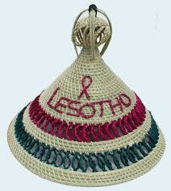
Molianyeoe
Sefatla

Ts'ets'e
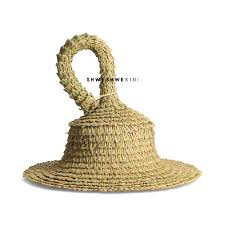
Thethana
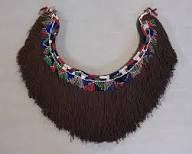
Mose oa khomo
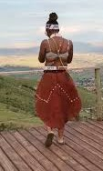
Leqapha
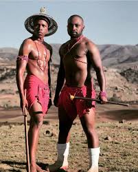
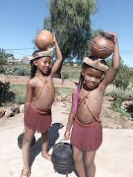
Female initiation school attire
Lebollo la basadi also known as female initiation among
the Basotho is a rite of passage ritual which marks the
transition of girls into womanhood.
Read more about female initiation
Lebollo la basadi also known as female initiation among
the Basotho is a rite of passage ritual which marks the
transition of girls into womanhood.
Read more about female initiation
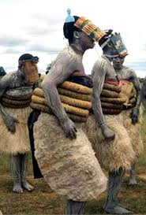
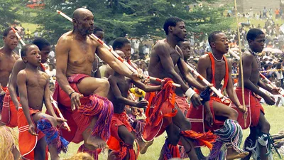
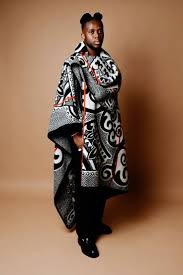
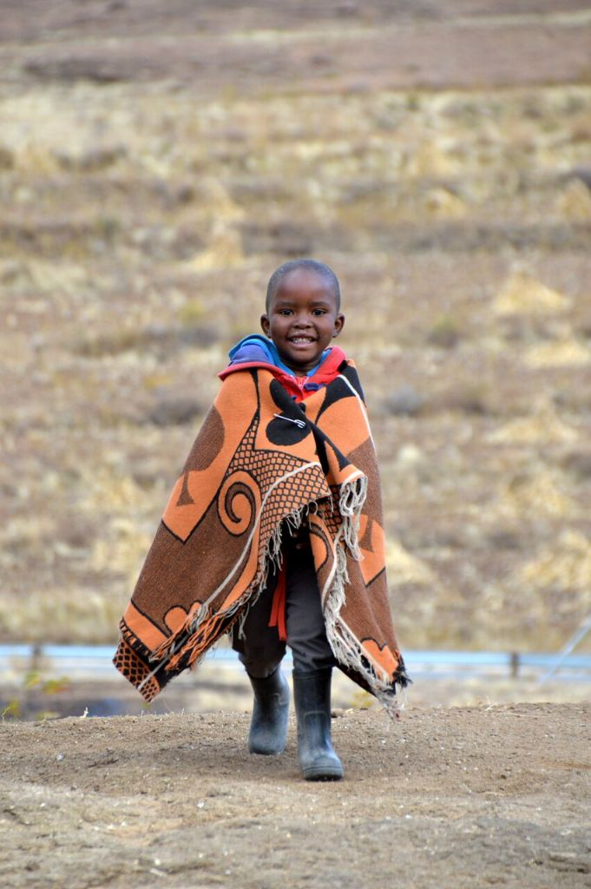
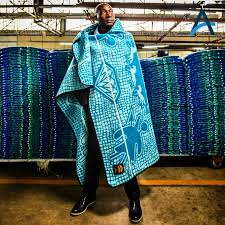
Men initiation school attire
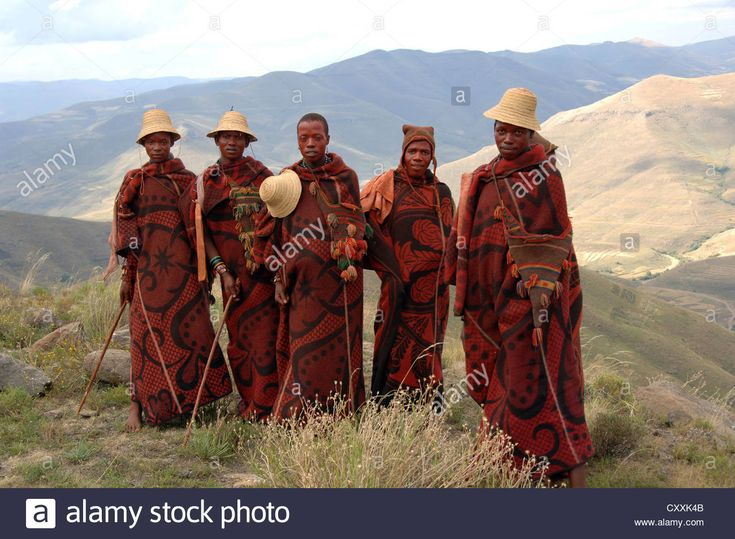
Shepherds attire
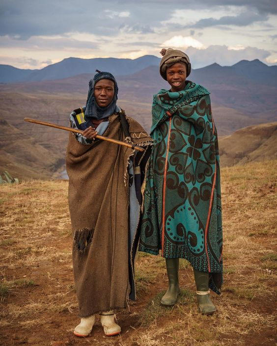
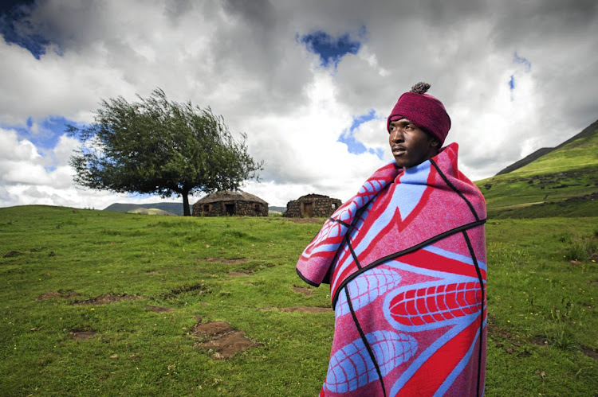
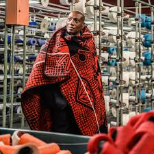
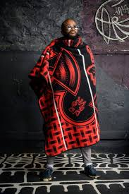
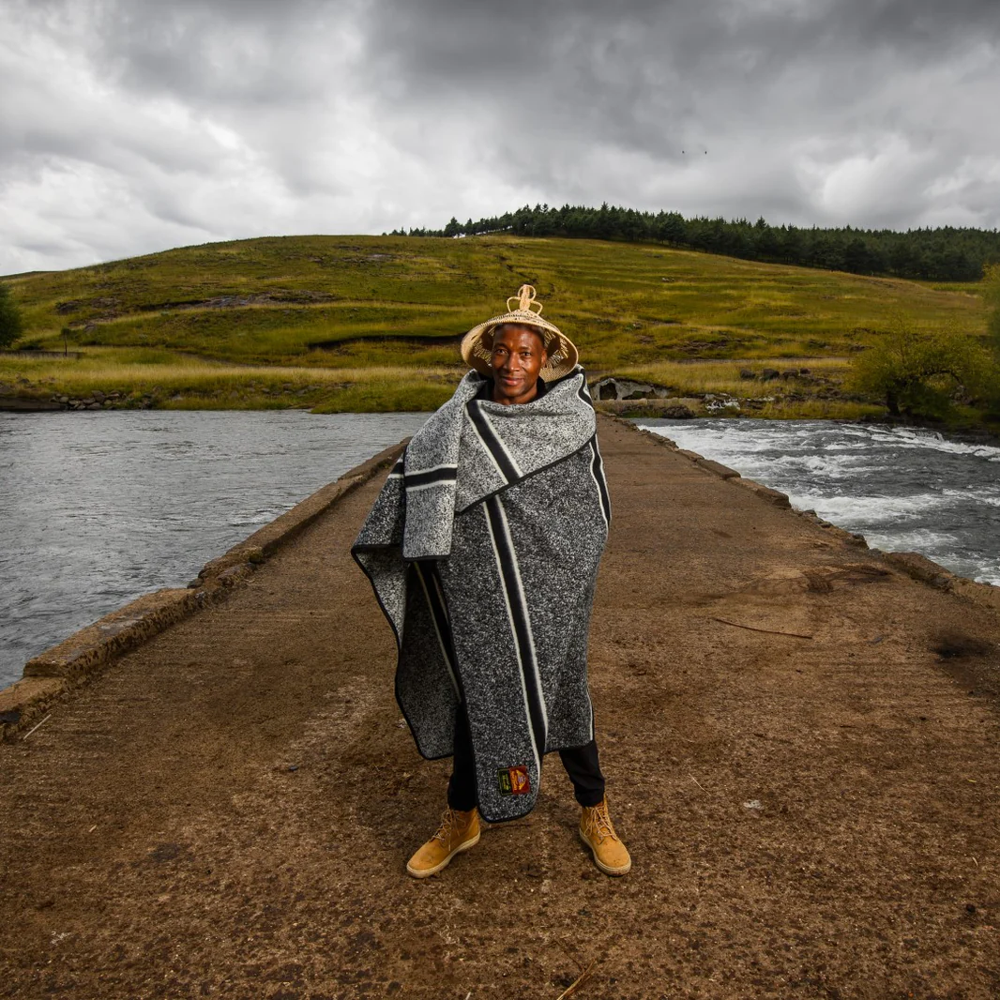
Latest jackets made by Basotho Entrepreneurs such as Joachim Garments
At Joachim Garments, they specialize in crafting contemporary luxury
fashion deeply rooted in Basotho culture. Established in 2018, their mission
is to create garments that transcend trends by blending traditional craftsmanship with modern design
At Joachim Garments, they specialize in crafting contemporary luxury
fashion deeply rooted in Basotho culture. Established in 2018, their mission
is to create garments that transcend trends by blending traditional craftsmanship with modern design
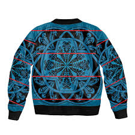
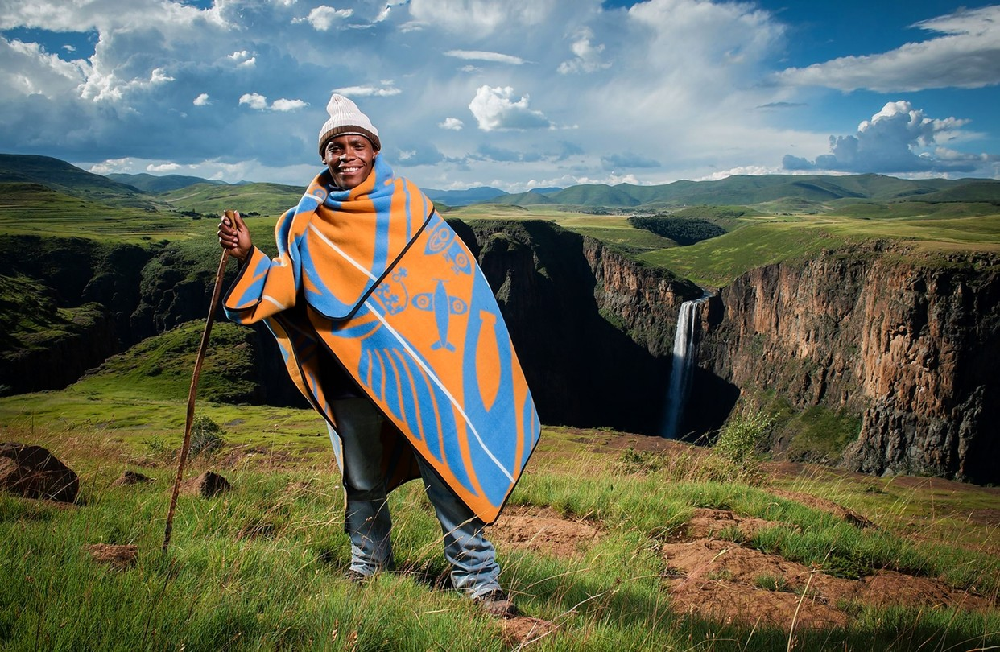
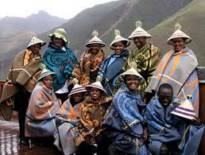
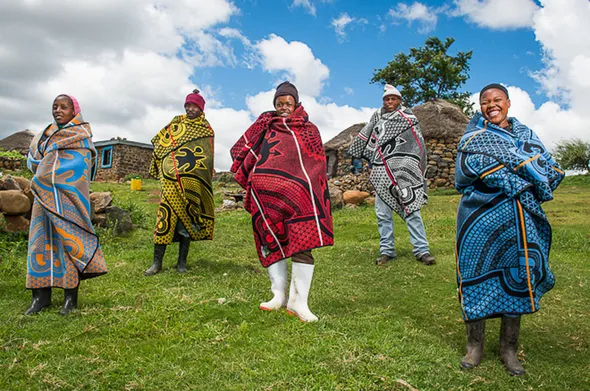
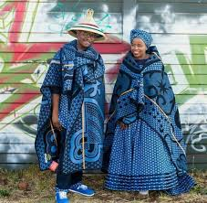
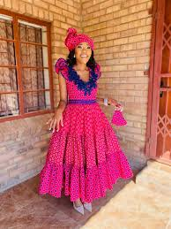
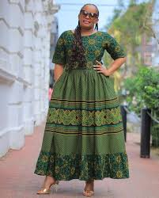